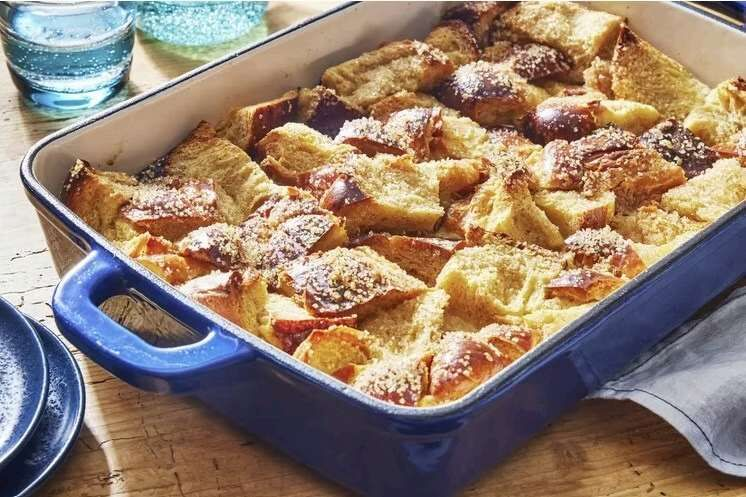

Bread Pudding and Vanilla Sauce

Vanilla sauce: This is such a simple vanilla custard sauce made from ingredients you may already have in your refrigerator. This can be called vanilla sauce, vanilla custard sauce, or creme anglaise.
Ingredients
Bread Pudding
- 6 slices stale bread (Or about 4-5 cups of broken bread pieces or cubes. Some ideas to use are: french bread, buns, rolls, donuts, challah, toast or another type of bread.)
- 3 tablespoons of butter 1 Tablespoon + 2 Tablespoons
- 4 beaten eggs
- 2 cups milk
- ¾ cup white sugar
- 1 teaspoon vanilla extract
- 1 teaspoon cinnamon
Vanilla Sauce (Creme Anglaise)
- 1 cup Whole Milk: I suggest using whole milk but you may use 2% milk or even half-n-half for a richer vanilla sauce.
- 1 cup Heavy Cream: This gives it the velvety, smooth, and creaminess.
- 6 large Egg Yolks: This gives it that rich creamy flavor and texture. For a less custard flavor, you may reduce the egg yolks to 5 egg yolks.
- 2/3 cup Sugar: Use granulated sugar for this recipe. Stir the sugar and egg yolks together until smooth before adding the warmed milk and cream.
- 2 teaspoons Vanilla Bean Paste: Another option is to use a high-quality vanilla extract or use a vanilla bean. I like to use the best vanilla in custards or sauces since the flavor is so important. Always add the vanilla once you remove the sauce from the heat.
Instructions
Bread Pudding
- Preheat oven to 350 degrees, and use 1 Tablespoon of butter to coat the inside of your 8 inch square baking dish.
- Break your bread (I made larger pieces, rather than crumbling it up) in to the buttered baking dish.
- Melt your remaining 2 tablespoons of butter, and drizzle over bread pieces.
- In a bowl, mix remaining ingredients (don't forget to beat your eggs first) until mixed well. 4 beaten eggs, 2 cups milk, ¾ cup white sugar, 1 teaspoon vanilla extract, 1 teaspoon cinnamon
- Pour this mixture over the bread, making sure to evenly coat each piece.
- Bake for 45 minutes, or until the top of the bread pudding springs back after lightly touching it with a fork.
Vanilla Sauce
- Heat Milk & Cream: Warm gently until just simmering. Adding some cream with milk enhances the richness. Heat milk and cream in a saucepan to make vanilla sauce or creme anglaise.
- Whisk Yolks & Sugar: Whisk yolks with sugar until pale and smooth. This step is essential to prevent the sauce from becoming grainy.
- Tempering the Yolks: Carefully pour a small amount of hot milk into the yolk mixture while whisking constantly. This process slowly raises the yolk temperature, preventing curdling when the yolks are added to the pot. Slowly temper the egg yolks with the warm milk mixture to avoid curdling when making a vanilla custard sauce or creme anglaise.
- Thicken the Sauce: Return the tempered yolk mixture to the pot and cook on low heat, stirring constantly, until the sauce coats the back of a spoon (165-175 degrees).
- Strain: For ultimate smoothness, strain the sauce through a fine-mesh sieve to remove any tiny curdled bits.
- Serve Warm or Chill: Serve warm on warm bread pudding or allow to cool before serving or refrigerating.